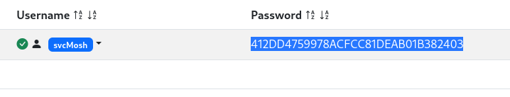

Portscan TCP/UDP
nmap -sVC -p- --open -sS --min-rate 5000 -v -n --stats-every=5s -Pn -oN underpass_scan 10.10.11.48
PORT STATE SERVICE VERSION
22/tcp open ssh OpenSSH 8.9p1 Ubuntu 3ubuntu0.10 (Ubuntu Linux; protocol 2.0)
| ssh-hostkey:
| 256 48:b0:d2:c7:29:26:ae:3d:fb:b7:6b:0f:f5:4d:2a:ea (ECDSA)
|_ 256 cb:61:64:b8:1b:1b:b5:ba:b8:45:86:c5:16:bb:e2:a2 (ED25519)
80/tcp open http Apache httpd 2.4.52 ((Ubuntu))
|_http-server-header: Apache/2.4.52 (Ubuntu)
| http-methods:
|_ Supported Methods: GET POST OPTIONS HEAD
|_http-title: Apache2 Ubuntu Default Page: It works
Service Info: OS: Linux; CPE: cpe:/o:linux:linux_kernel
UDP
PORT STATE SERVICE VERSION
161/udp open snmp SNMPv1 server; net-snmp SNMPv3 server (public)
Service Info: Host: UnDerPass.htb is the only daloradius server in the basin!
snmpwalk -v2c -c public 10.10.11.48
gobuster --wordlist=/usr/share/wordlists/dirbuster/directory-list-2.3-medium.txt dir -u http://underpass.htb/daloradius/
http://underpass.htb/daloradius/app/operators/login.php
Default creds vuln
I found a md5 hash

Enter as a user
Command that can be executed as admin
I start the program with debugger activated
Shell as root